Silový a kondiční trenér
Síla. Výkon.
Systematický přístup.
Individuální příprava sportovců, online coaching a odborné vzdělávání trenérů.
Radek Rosa
Silový a kondiční trenér | Edukátor
Věnuji se silové a kondiční přípravě profesionálních sportovců i běžné populace. Ve své práci propojuji vědecké poznatky s praktickými zkušenostmi ze sportovního prostředí. Vedle individuálního tréninku se věnuji také vzdělávání trenérů a fyzioterapeutů prostřednictvím odborných workshopů.
Méně o mně
K silovému tréninku mě poprvé přivedla příprava v rugby klubu Slavia Praha v roce 2005. Později jsem absolvoval několik zápasů podle pravidel MMA a olympijského boxu. Dnes se naplno věnuji trénování klientů, psaní edukačních publikací a pořádání vzdělávacích kurzů pro trenéry. Mými kurzy prošlo už 700+ absolventů z Česka a Slovenska. Příležitostně přednáším na fakultě tělesné výchovy a sportu Univerzity Karlovy.
Jsem členem projektu TopAtlet a působím jako silový a kondiční trenér v klubu Reinders MMA. Ve snaze neustále rozšiřovat své znalosti jsem měl příležitost osobně se učit od špičkových odborníků z celého světa, jako jsou Cal Dietz, Alex Natera, Pat Davidson, Tim Gabbett a další.

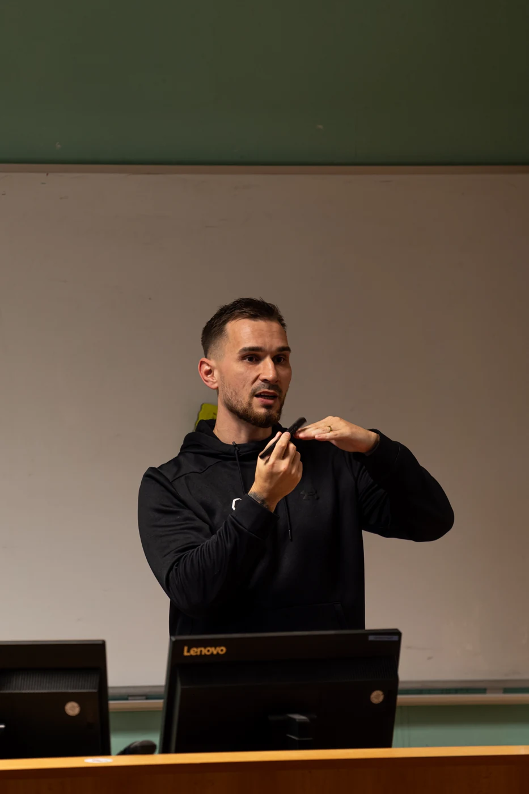
moje certifikace a kvalifikace
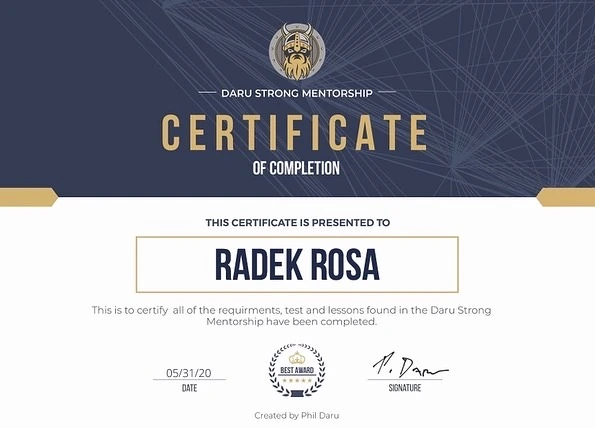
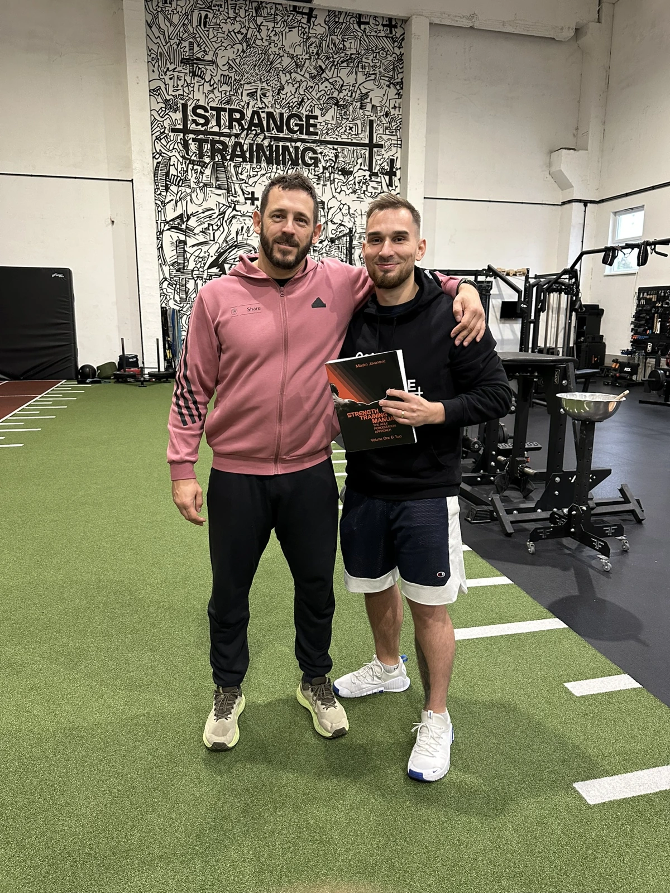
Mladen Jovanović
-Agile Periodization Approaches to Planning and Performance: From Microcycles to Skill Mastery
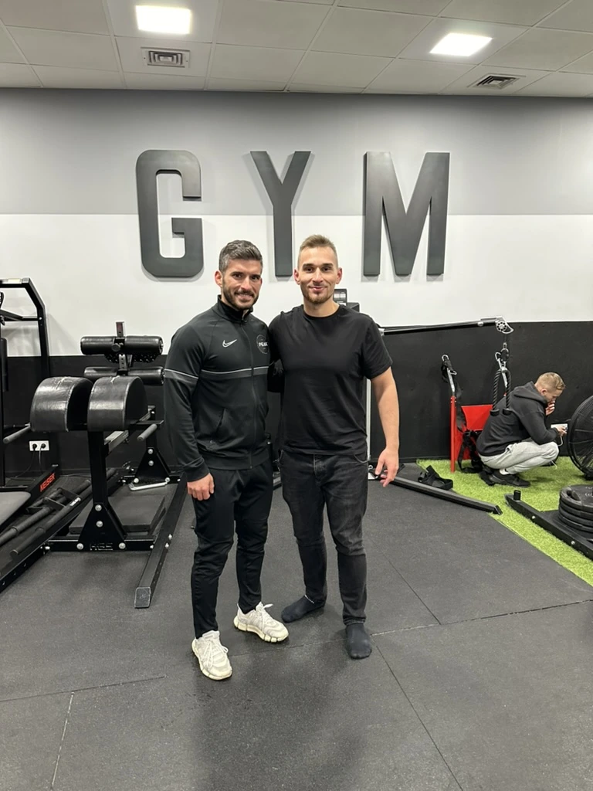
Luis Mesquita
-Bridging the Gap in Speed and Agility Development

Tim Gabbett
-Training performance puzzle
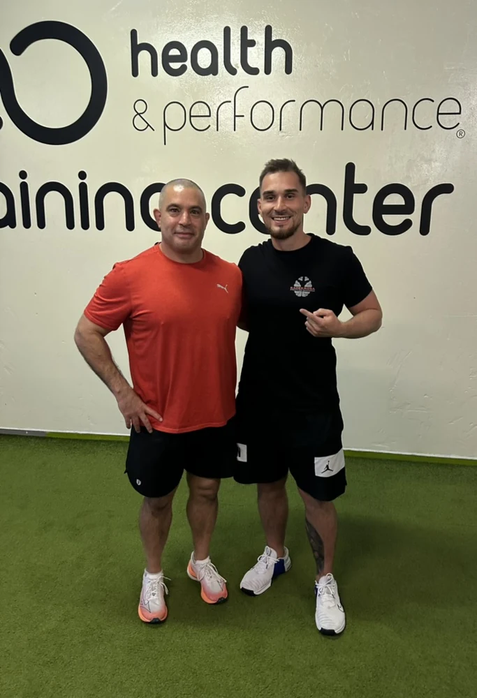
Alex Natera
-Isometric strength training

Cal Dietz
-Results-based training

Jordan Shallow
-The Prescript intense
Zobrazit další vzděláváníSkrýt další vzdělávání
- Daru Phil - Mentorship (2020)
- Romain Tourillon, PhD. - The Sporting Foot-Ankle Complex: From Rehab to Sport Performance (Bratislava, Slovensko 2025)
- Tomáš Mihalík PhD. - Hypertrofia (Bratislava, Slovensko 2023)
- Ch.Thibaudeau - OCTS Principles & science
- Ch.Thibaudeau - OCTS The methods
- Ch.Thibaudeau - OCTS Programming
- THIBARMY Training systems
- Exos: Strength & Power by Dan Baker
- Adam Antmann - Hluboký stabilizační systém páteře 1.
- Adam Antmann - Hluboký stabilizační systém páteře 2.
- Coretraining.cz - Funkční stabilizace lopatek
- Sue Falsone - Shoulder webinar
- Sue Falsone - Cervical Spine webinar
- The Movement Seminar - Jakub Moravčík (fyzioterapie)
- Soukromá stáž Topatlet.cz - Teoretická a praktická výuka metod fyzické přípravy sportovců (nyní členem týmu)
- Trenérská škola Ronnie
- Martin Schmiedl - komplexní diagnostika a náprava kyčlí a pánve (fyzioterapie)
- IMV - Moderní výživa
- Tomáš Mihalík PhD. - Hamstring (Bratislava, Slovensko 2023)
- Ben Yanes - Biomechanics (webinar)
- Tomáš Mihalík PhD. - ACL (Bratislava, Slovensko 2024)
- Dr. Pat Davidson - RTBP (Bratislava, Slovakia 2024)
- IMV - Československá evidence-based konference o výživě
- Zdravoafit- (4.) Mezinárodní sportovní konference
- Oxygen Advantage - Movelab
- Oxygen Advantage - Colliery Academy
- FTVS Mgr.Jan Padecký “Evidence-based seminář”
- Martin Schmiedl – komplexní diagnostika a náprava ramene (fyzioterapie)
- Zdravoafit- (5.) Mezinárodní sportovní konference
- Ch.Thibaudeau – Hypertrophy cornerstone
- Landmine University workshop – Movelab
- EXOS: The applied neuroscience of peak performance
- Velocity based training – Jan Padecký a Radek Gwudz
- Science of sport: ACL rehab
- Science of sport: Elite vertical performance (Overtime Athletes)
- Kabuki education week
- Thibarmy - Movement optimalization specialist
- Thibarmy - Fast twich fibers
- Neurovizuální trénink - dynaoptic
- RPR system lvl 1,2,3
- Isometric Strength Training - Alex Natura (Sportsmith)
- Pohybový rozvoj dětí - Mgr. Adam Rybář (Praha 2024)
- A mnoho dalšího... :)
Moji klienti
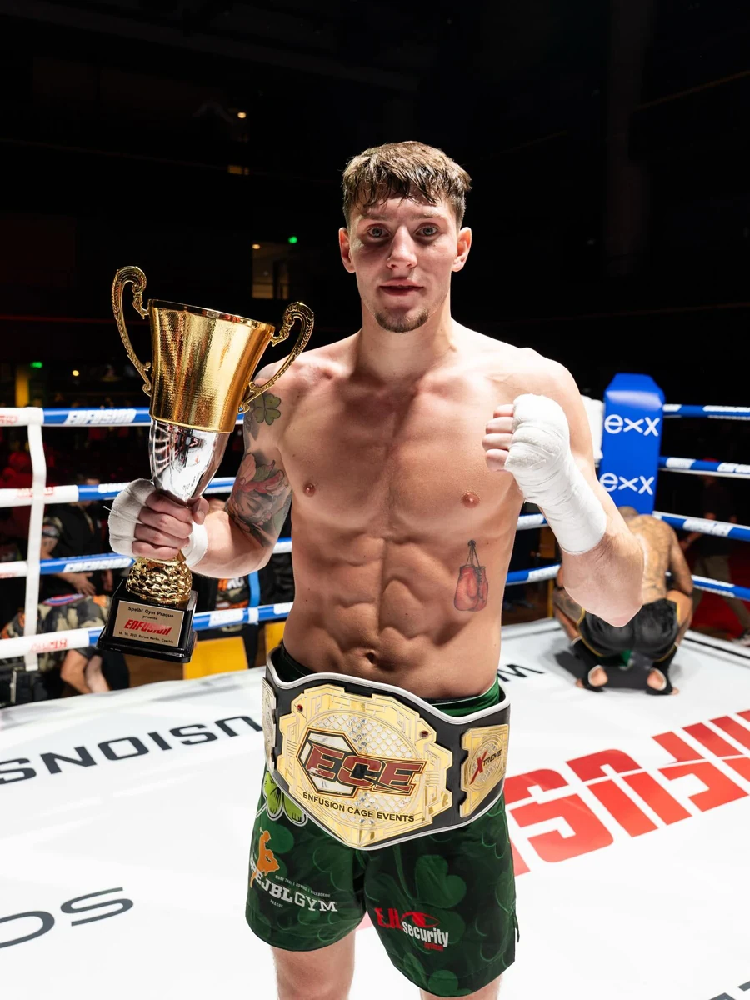
Lukáš Hudler
WAKO & ENFUSION World Champion
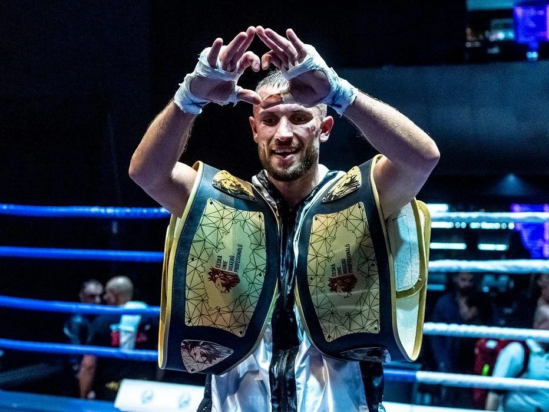
Pavel Polakovič
WBC CISBB CHAMPION

Miloš „Meloun“ Petrášek
Zápasník Oktagon MMA
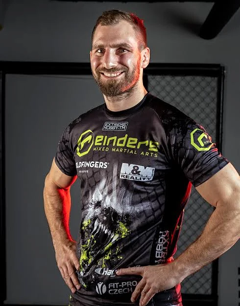
Andre Reinders
Head coach Reinders MMA
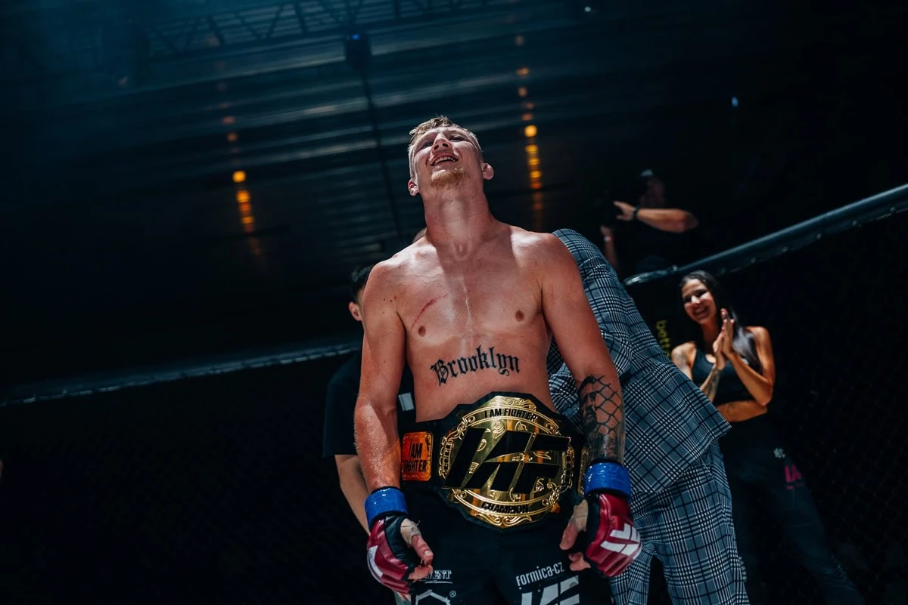
David Zoula
Šampion IAF
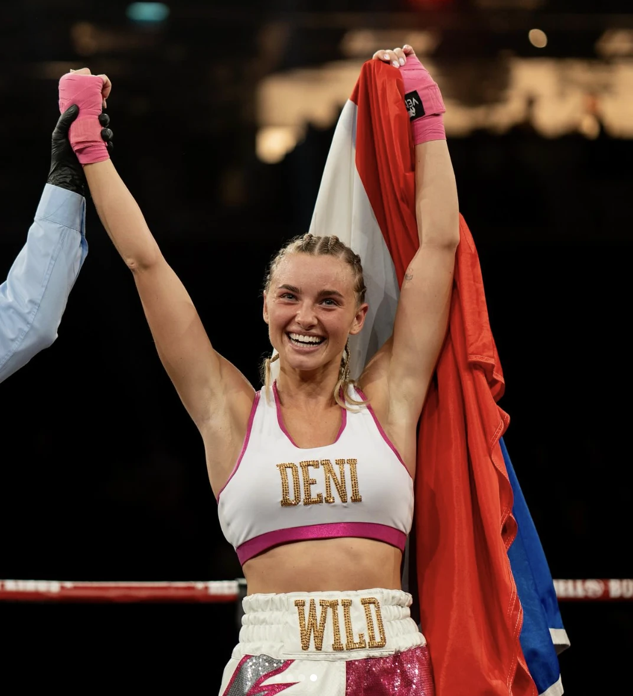
Denisa Novák Valová
vicemistryně ČR v boxu
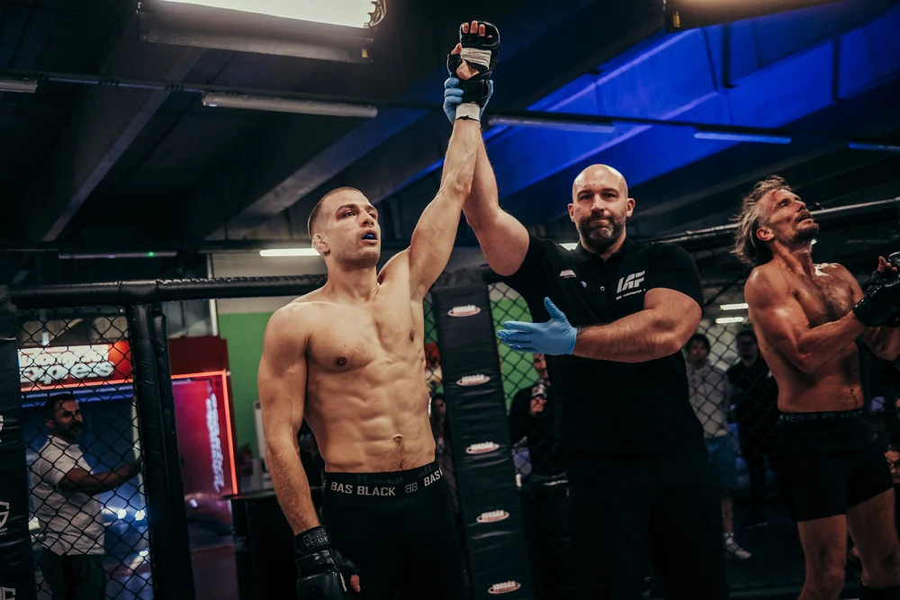
Josef Stráník
Boxer organizace Patron boxing
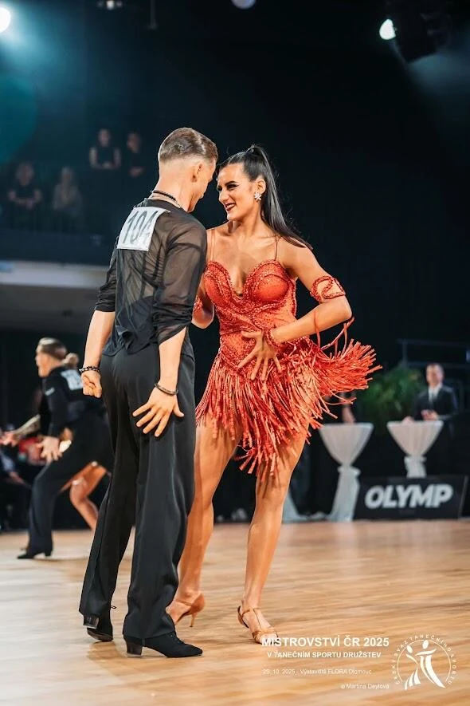
Julie Přibylová
Účastnice MČR, mistrovství Evropy a světa v tanci
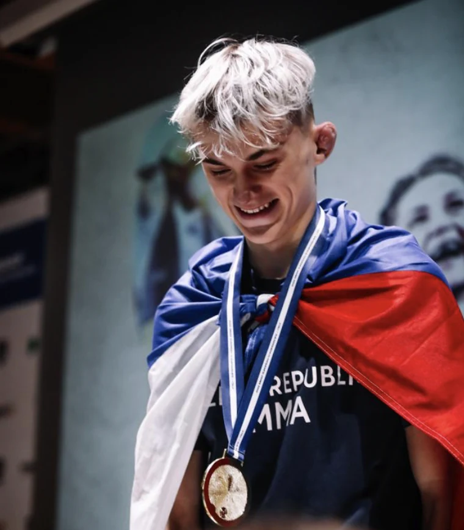
Patrik Kutil
Mistr Evropy IMMAF
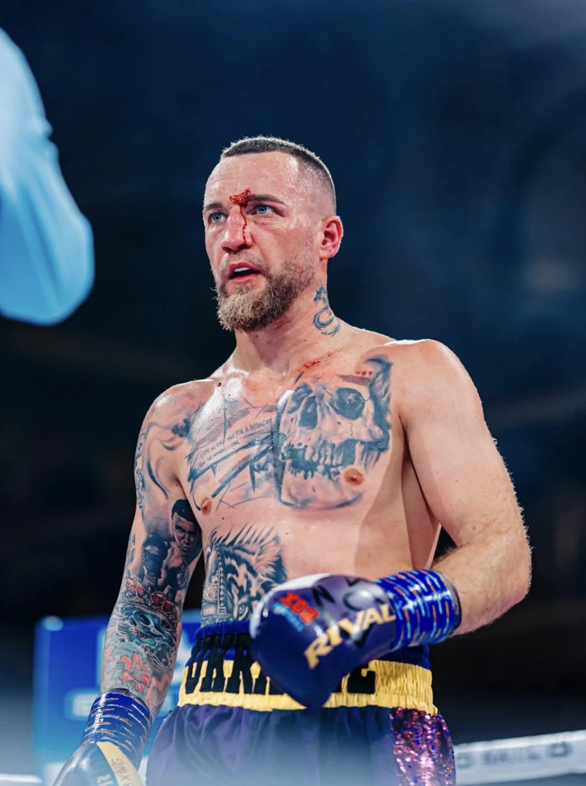
Yevhen Drebit
Boxer v organizaci Tohle Je Box
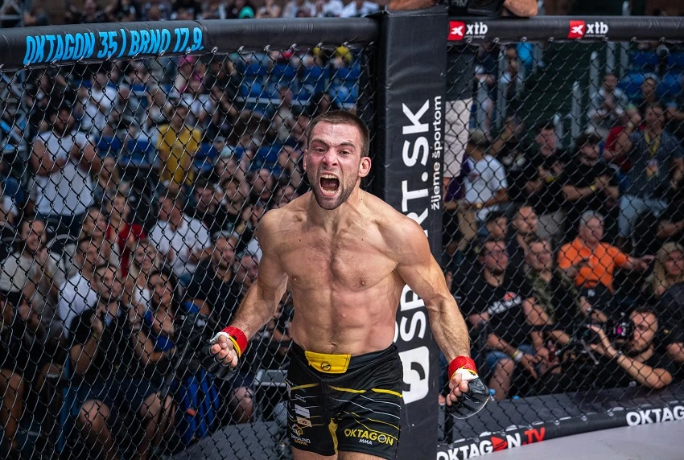
Filip Macek
Zápasník Oktagon MMA
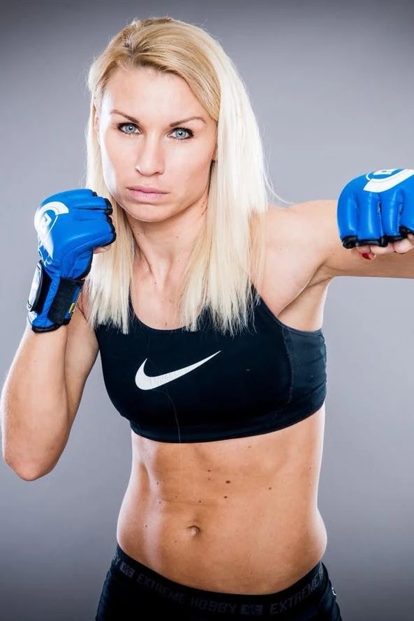
Petra Částková
Zápasnice Bellator MMA
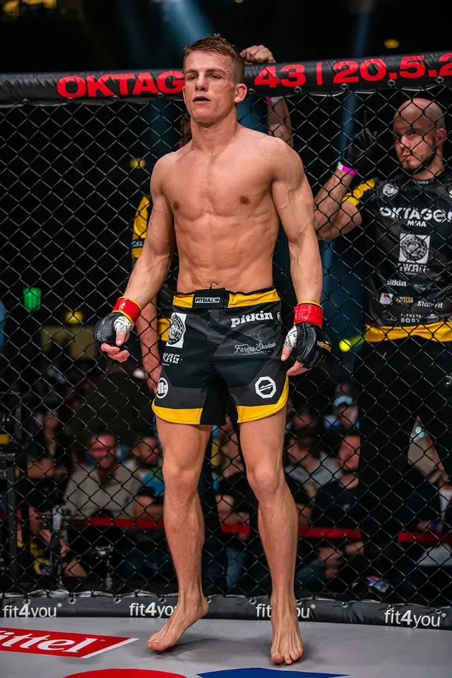
Jakub Dohnal
Zápasník Oktagon MMA
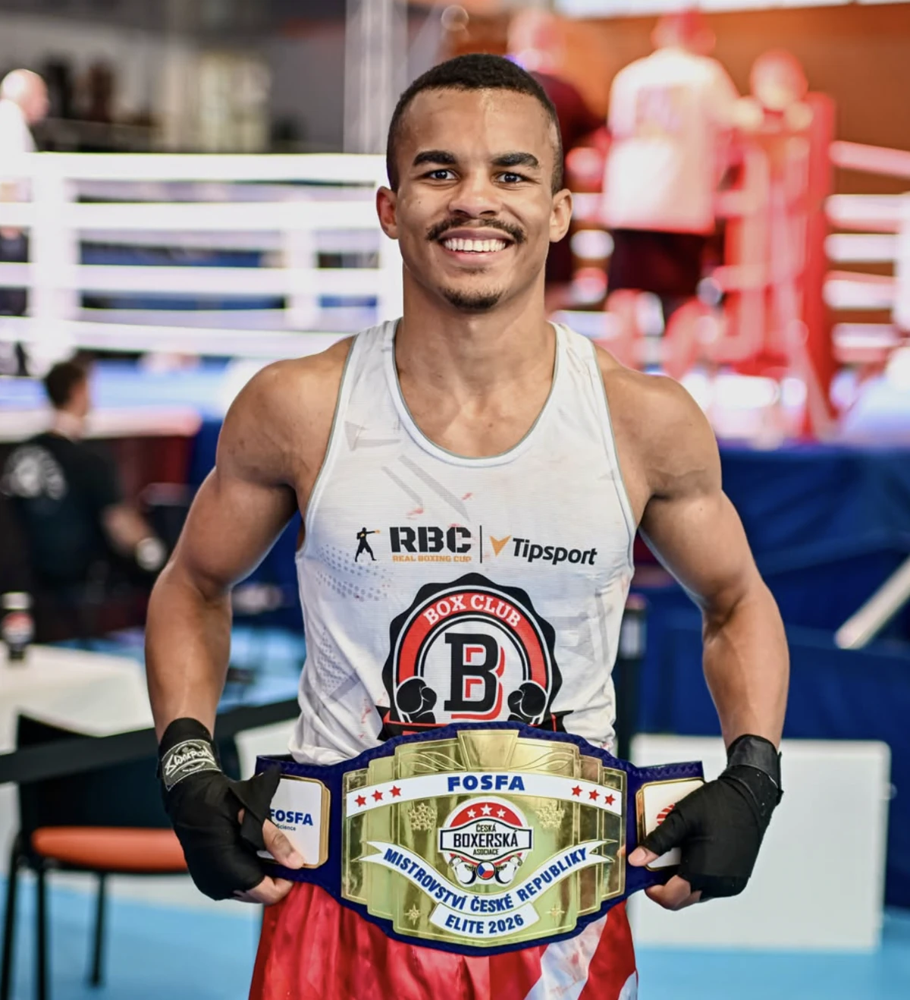
Kelvin Soquessa
Šestinásobný mistr ČR v boxu
Další klienty zobrazíš posunutím galerie
Co o mně moji klienti řekli?
"S Radkem pracuji druhým rokem formou online coachingu a musím říct, že jsem hodně spokojeny. Má profesionální přístup a velke znalosti daného sportu. 👍"
"S Radkem uz nejakou dobu spolupracuji a musim rict, ze svou praci dela dobre a jde videt, ze ji miluje. Opravdu se o sve klienty zajima a spoluprace nekonci jen ve fitku. Hodne mi pomohl s rehabilitaci po operaci kolene a ma velkou zasluhu na mem navratu do vrcholoveho sportu."
"Na Radka jsem se obrátil po operaci (ACL) kolene s prosbou, že bych se rád vrátil k fotbalu. Po celou dobu Radkovi naprosto se vším co děláme důvěřuji a nyní už se pomalu opět vracím na trávník. Lidský a kamarádský přístup je velmi příjemný a na tréninky chodím rád! Mohu jen doporučit!"
"Ve svém malinko vyšším věku jsem se rozhodla udělat vše pro své tělo ať ze zdravotního ,tak vzhledového hlediska ,aby to bylo k mé spokojenosti.Vybrala jsem trenéra Radka a nemohla jsem udělat lépe.Lidskost,profesionalita,vstřícnost a obrovská trpělivost 😊Děkuju ,že to semnou nevzdáváte trenére"
"Radek je skvely trener, ktery svou praci dela naplno a s laskou. Neustale se vzdelava a je videt, ze sve praci velmi rozumi. Kazdy trenink vymysli neco noveho, zameruje se na cil, ktery jsme si na zacatku nasi spoluprace stanovili a krome skvele pripravenych treninku umi i dobre motivovat a je s nim legrace. Na pravidelnem cviceni s Radkem jsem uz zavisla 🤩💪🏻. Takoveho trenera mohu jen doporucit 👏🏼😊💪🏻."
"Dlouuho jsem se přemlouval ke cvičení, nevěděl jsem kde ,jak začít, Radka znám par let. Za tu dobu ušel kus cesty a když sem to viděl, cítil sem ze mi pomůže s moji cestou. A to se taky stalo! Velká sranda, ale pozor, pěkně přisnej umí být😁Dostane z Vás maximum. Sem vděčný , s nim trénovat a travit čas. Diky"
Chceš posunout svou výkonnost na vyšší úroveň?
Pojďme najít cestu, která bude fungovat právě pro tebe.
Domluvit bezplatnou konzultacigalerie fotek


videa se mnou
Další videa zobrazíš posunutím
Kontakt
Kontaktuj mě, pokud máš zájem o trénink!